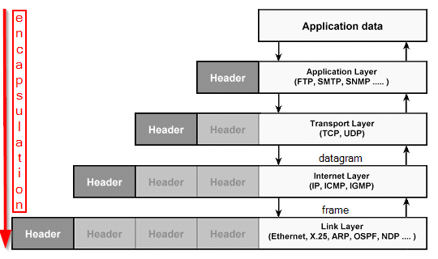

IP protocol suite (TCP/IP)
IP protocol suite
also called
TCP/IP
The TCP/IP protocol
is been inspired by the ISO/OSI
model that was considered by many as too complicated, inefficient and unimplementable
TCP/IP
specifications are free. ISO charges a fee to anyone who would use its protocol.
Layers:
| layers |
TCP/IP |
ISO/OSI |
Protocols |
what they do |
| 7 |
Application |
Application |
DNS, FTP, LDP, Telent, TFTP, SMTP, WWW |
provides a user interface and determines the network services required |
| 6 |
"" |
Presentation |
HTTP, TLS/SSL, TIFF, JPEG, MIDI and MPEG |
presents data to the application layer; functions as a translator from computer to human readable form |
| 5 |
"" |
Session |
NFS, SQL, RPC, NetBIOS |
establishes and maintains the connection between systems and formats the data for transfer between nodes
|
| 4 |
Transport |
Transport |
TCP, UDP, SPX |
defines how to address physical locations, how to make connections between nodes, and how to handle the
network
of messages. This layer is responsible for end-to end integrity and control of the session and handles the
sequencing of packets. |
| 3 |
Internet |
Network |
IP, NAT, OSPF, ICMP, RIP |
how packets of data are routed between end systems over interconnected networks. Routing error detection,and
control of node data traffic are managed at this layer |
| 2 |
Link |
Data Link |
ARP, SLIP, PPP |
protocols that computers use in order to access the network for transmitting and receiving messages.Has two
sub layers:
→ Logical Link Control
→ Media Access Control |
| 1 |
"" |
Physical |
HSSI, X.21, EIA/TIA-232, EIA/TIA-449 |
defines the physical connection (RJ48, BNC, HSSI, etc…) between a host and a network and converts the bits
into voltages or light impulses for transmission |
Encapsulation
:Protocols on the different layers work together thanks to the
encapsulation.
The entire packet(
header plus
payload) of the upper protocol is the payload of the lower
protocol(used in the layer); this is called encapsulation.
bibliography:
https://computing.llnl.gov/sites/default/files/public/MACSio-Figure2-image003_0.gifJames
Summers, “Packet Analysis Reference Guide”, 2008